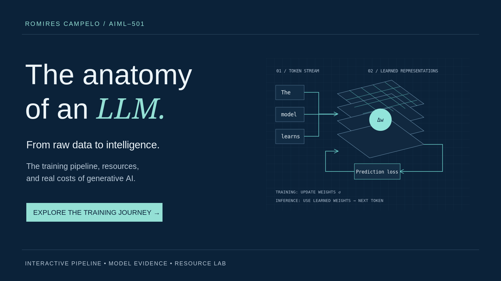

Machine Learning
Algorithms
Algorithms
Machine Learning Algorithms
This educational infographic explores ten models across tabular data, computer vision, natural language processing, and generative AI.
Append to the latest artifact row. Preserve all existing artifact titles and numbering.
This educational infographic explores ten models across tabular data, computer vision, natural language processing, and generative AI.
Explore how neurons, layers, weights, and learning algorithms work together.

Explore how large language models are trained—from raw data to deployment. An interactive pipeline, sourced model comparisons, and a resource lab reveal the engineering trade-offs behind generative AI.
Illustration follows the observed portfolio’s dark navigation, blue banner, three-column artifact layout, linked titles, and short descriptions. Existing covers are represented schematically; the new cover is the supplied final asset.